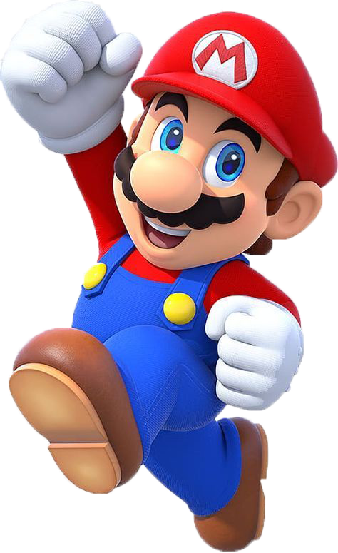
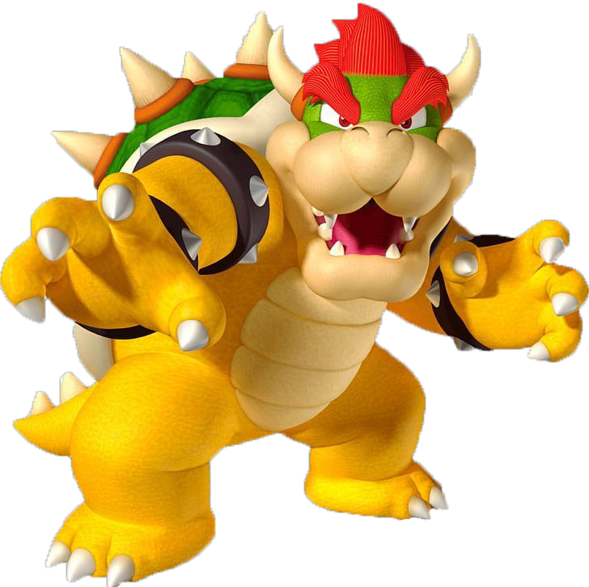
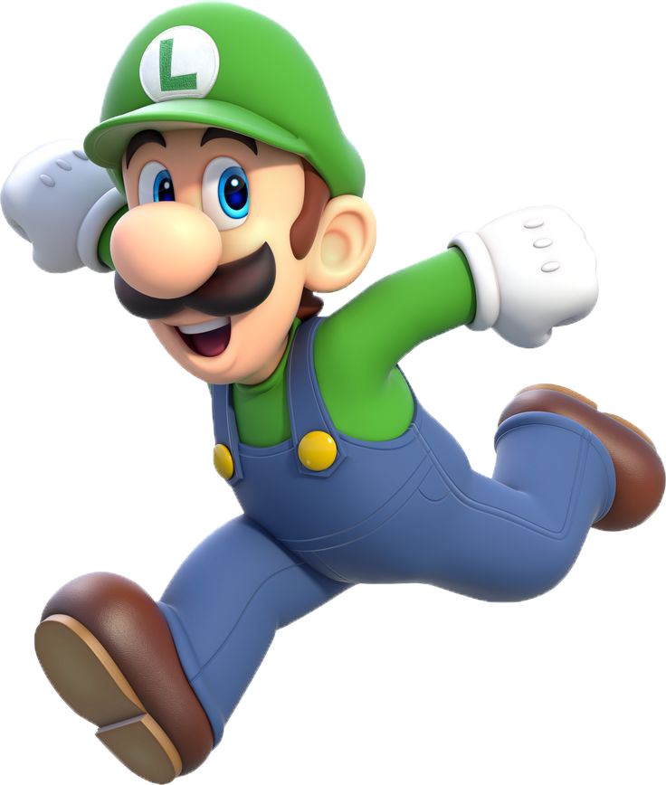
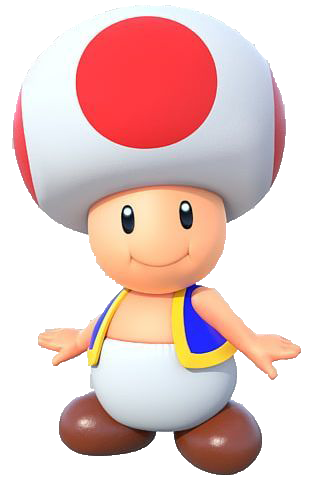

Mario has expanded into a vast universe filled with diverse characters and worlds. This section highlights some of the most memorable individuals who have played a significant role in the franchise and their stories!
The man, the myth, the legend, MARIO! He is the hero of the story, Player 1, and beloved Goomba stomper. Making his first appearance in 1981 in the Donkey Kong arcade game, Mario has remained a timeless classic ever since, serving as the primary protagonist in nearly every story-driven game. From jumping through pipes to racing on rainbow roads, Mario has done it all, whether saving Princess Peach, battling Bowser, or soaring through galaxies, proving time and time again why he is the king of platformers.

The signature big bad, the King of the Koopas Bowser! As Mario’s greatest foe and the primary antagonist
in countless games, he has been a relentless force of chaos since his debut in 1985. Whether he’s
kidnapping Princess Peach, assembling an army of minions, or wreaking havoc across the Mushroom Kingdom,
Bowser is always lurking, waiting for the perfect moment to strike. No matter where Mario goes, his fiery
rival is
never far behind, ready to make his next move...
The Princess of the Mushroom Kingdom Princess Peach! A graceful ruler and a beloved icon, she made her first appearance in 1985, captivating players with her charm. Though she reigns over the kingdom with elegance, she often finds herself at the center of trouble, leading some to joke that she’s the reason for all the chaos. Regardless, her presence in the franchise is undeniable, evolving from the classic damsel in distress to a playable hero. Whether she's racing through Rainbow Road or battling alongside Mario, she has always remained a fan favorite!
Trusty Player 2, Luigi the iconic other half of Mario, standing strong since his debut in 1983’s Mario Bros. While he may not always take center stage, Luigi is never far behind, ready to support his brother in every adventure. Whether he’s jumping into danger, mastering his signature high-flying leap, or braving haunted mansions with nothing but a flashlight, Luigi has proven time and time again that he’s more than just a sidekick.
The loyal little mushroom, Toad! Since his debut in 1985, he has served as Princess Peach’s trusted attendant within the castle. But through his fierce determination and unwavering loyalty, he quickly became more than just a royal helper—he was an adventurer. Time and time again, Toad proved himself with his incredible speed, quick thinking, and boundless enthusiasm, earning his place alongside Mario and his crew. As the years passed, he carved out his own legacy, starring in racing circuits, treasure hunts, and thrilling adventures!